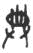
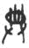
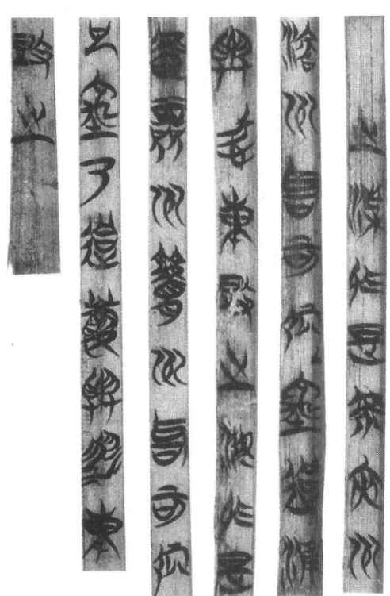
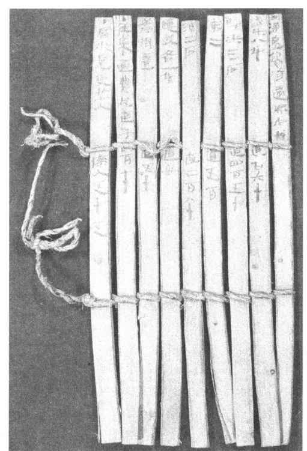
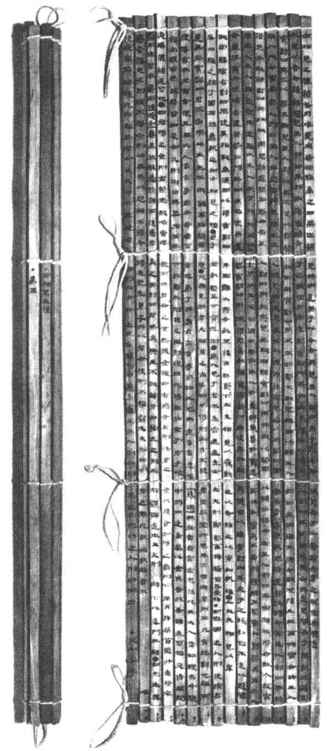
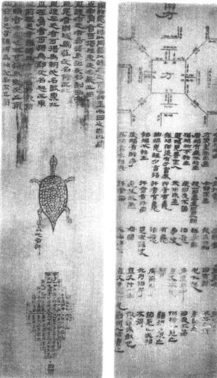

第一节
简牍制度
一、简牍的起源和历史
简，指竹木制成的简册；牍，指木制的版牍。竹木由于遍地生长、物丰价廉，是我国最早使用的书籍材料之一。用竹木制成的简册，从古文字学和历史文献考察，可以推断至迟在商代就已出现。商代甲骨文中有“册”字，也有“典”字。“册”写作“ ”、“”、“”等，均象竹木简编连之形；“典”则写作“”、“”等。东汉许慎的《说文解字》引庄都说：“典，大册也。”今人认为象以手捧册置于架上。从甲骨文还知道，商代已把史官称为“作册”，这与我国早期文献《尚书》中的“王命作册”、［1］“命作册度”等语适相印证。［2］《尚书·多士》篇还明确说：“惟殷先人，有册有典。”这些都可视为商代已使用简册的有力佐证。至于版牍，文献记载周代已使用。《周礼·司书》说：“掌邦人之版。”《司民》说：“掌民之数，自生齿以上皆书于版。”等等。不过，可能由于年代久远、朽蠹殆尽的原因，在考古发掘中，至今没有发现商周时期的简牍实物。
”、“”、“”等，均象竹木简编连之形；“典”则写作“”、“”等。东汉许慎的《说文解字》引庄都说：“典，大册也。”今人认为象以手捧册置于架上。从甲骨文还知道，商代已把史官称为“作册”，这与我国早期文献《尚书》中的“王命作册”、［1］“命作册度”等语适相印证。［2］《尚书·多士》篇还明确说：“惟殷先人，有册有典。”这些都可视为商代已使用简册的有力佐证。至于版牍，文献记载周代已使用。《周礼·司书》说：“掌邦人之版。”《司民》说：“掌民之数，自生齿以上皆书于版。”等等。不过，可能由于年代久远、朽蠹殆尽的原因，在考古发掘中，至今没有发现商周时期的简牍实物。
目前考古发掘中出土的简，最早的属战国前期，如1978年湖北随县擂鼓墩一号墓发现的楚简（年代为前433年）；版牍最早的属战国晚期，有1975年在湖北云梦县睡虎地四号秦墓发现的两件木牍家信（时间约前223年）；和1979年至1980年四川青川郝家坪50号墓发现的秦牍等。（图8—1）

图8-1 上博楚简《容成氏》
不过，商周的简牍典册，最初还不等同于后世的书籍。因为最早的典册都是史官的著作，内容大多是记录统治者的言行，目的是为统治者提供参考。加之春秋以前，史官垄断了著作权和典藏权，这些典册不是一般人所能见到的，因此基本属于文书档案性质。另外，西周至春秋时，还产生了许多诗歌作品，收集起来以配合舞乐，就成为后来的《诗经》；用蓍草占卜的卦辞、爻辞，收集起来以判吉凶，就成为后来的《周易》；贵族之间通行的礼仪，收集起来以节制行止，就成为后来的《仪礼》，等等。这些资料的收集整理者本是贵族中有文化的“祝”、“史”之流，写于典册后也由他们掌握，一般人同样不能见到，所以最初也都属文书档案性质。
春秋后期，中国社会发生了剧烈的变革，文化开始从祝史的手中下移到民间。儒家创始人孔子，以个人身份整理修订六经，并用以在民间传播知识文化。这样，《书》、《诗》、《易》、《礼》、《乐》、《春秋》之类，就成了传授文化知识的教科书，正式变成了供人阅读的图书。此时个人著述也大量出现，到战国时期，不同学派、不同思想的人们纷纷著书立说，形成“百家争鸣”的局面。此时，书籍作为思想文化的载体，无论从内容到形式，还是从数量到质量都有了一个划时代的发展。
春秋战国以前的书籍，大多写在简册上，也有的写在缣帛上。简册与帛书，甚至与后来的纸书，在行用的时间上有或长或短的交叉重叠时期。据现有资料，至迟在春秋战国时期，丝质的缣帛就已被用作书写材料，不过由于价格昂贵，在行用上始终未能独占一个时代（详见“卷轴制度”一节）。两汉时期虽然发明了纸，但直到东晋，官府公文、户口黄籍等还常用简牍书写，以示庄重。唐徐坚《初学记》卷二一引《桓玄伪事》说：“古无帋（纸），故用简，非主于敬也。今诸用简者，皆以黄纸代之。”桓玄（369—404）在东晋末年曾代晋称帝，可见在此之后，简牍才基本为纸所代替。
如果从商代开始算起，直至公元四五世纪，竹木简册的使用，至少已有一千多年的历史。
二、简牍的形制
20世纪20年代，王国维和马衡二先生先后撰写了《简牍检署考》、《中国书籍制度变迁之研究》两文，对简牍和帛书的形制多所论证。由于此后，特别是近些年来简牍实物的不断发现，王、马两先生的考证大多得到了证明，而其中的小疵微瑕，也有了补正的依据。
简牍形制的书，固然主要以竹木为载体，但有时也用玉石。1965年以来，文物考古工作者在山西省侯马市秦村以西，发现了几百个晋国盟誓遗址，共出土盟书五千多件，文字可辨识的有六百多件，大多是春秋时晋国的盟誓公约，这就是著名的“侯马盟书”。这些盟书写在玉石片上，形状类似圭、璋，也颇似简片，大多用朱笔写成，少数则为墨书。近年来在河南辉县，还曾出土50枚一束尚未写字的玉简。
用竹制简，首先须将竹竿截成段、劈成竹片，然后刮削修治成狭长条的简片，亦即古书中所谓“截竹为筒，破以为牒”［3］。简原有青皮的一面称为“篾青”，另一面称为“篾黄”，文字一般写在“篾黄”的一面。新竹水分多，易朽烂变形，所以还必须烘干水分，这叫“汗青”、“汗简”，也叫“杀青”。东汉应劭《风俗通》说：“刘向《别录》云，杀青者，直治竹作简书之耳。新竹有汗，善朽蠹，凡作简者，皆于火上炙干之。陈楚间谓之‘汗’，汗者，去其汁也。吴越曰‘杀’，亦治也。”［4］“杀青”后的简，就可用来写字了，所以后人常用作书籍的代称，南宋文天祥就有“人生自古谁无死？留取丹心照汗青”的诗句。［5］后来人们写定书稿，也称为“杀青”。在干燥少竹之地，人们也常用木材制简。19世纪末以来，曾在新疆南部、甘肃敦煌以及古居延等地多次发现西汉至东晋时期的木简。这些木简所用树材，多半是白杨木、柳木、松木，因其色白、质软，易于吸收墨汁。制作方法大体与竹简相似。
单根的简写不了多少文字，把若干根简编连起来，就是“册”，古书里也常写作“策”。唐代孔颖达说：“单执一札谓之为简，连编诸简乃名为策。”［6］贾公彦也说：“简谓一片而言，策是编连之称。”［7］编连简册，有时用“韦（熟皮条）编”，所以《史记·孔子世家》说：“孔子晚而喜《易》……读《易》，韦编三绝（断裂）。”有时则用各色丝绳，叫做“丝编”。据古籍记载，古《孙子》用缥丝绳编，《穆天子传》用素丝纶编，《考工记》用青丝绳编。［8］考古发掘中还发现了用麻线或帛带编连的简册。如1930年在居延地区发现的西汉元帝永光二年（前42年）文书和东汉和帝永元五年至七年（93—95年）的兵器簿，前者由3枚木简编成，后者由77枚木简编成，都用麻线，上下两道编。［9］50年代初，湖南长沙杨家湾六号墓出土72枚竹简，则用帛带编连，也是两道编。［10］参考《说文》所说，“册”字“象其扎一长一短，中有二编之形”，可以知道，上下两道编，是古人编册常用的方式。如果竹木简较长，两道编不够牢实，也有用三道编、四道编甚至五道编的。（图8—2）

图8-2 居延汉简《劳边使者过境中费册》
竹木简上的文字，通常是先将空白简编连成册，然后书写。《后汉书·周磐传》就说：“编二尺四寸简，写《尧典》一篇。”已经发现的竹木简册，许多编绳虽已朽坏，但编痕处常留有空白，正是书写时避开编绳的结果。当然也有的简册是先写好后编的，所以简上的编绳有时盖过了文字，如《永元兵器簿》。
竹木简上的文字，过去传说是用漆书写的，但目前出土的简册上的文字，几乎都是用毛笔蘸上墨汁书写的。随同简册，人们还发现过战国、秦及汉代的毛笔、墨、砚等文具，这就更加有力地证明所谓漆书写简，恐怕是一种误传。过去还传说用刀在简上刻字，其实也是误传。在发现战国毛笔的河南信阳长台关一号楚墓，曾发现铜锯、锛、刀、削等物；湖北江陵凤凰山汉墓，随同笔、砚、墨等也曾出土青铜削刀。但是可以看得出来，这些都不是用来刻字的。铜锯、锛、刀等，是用来砍削制作简牍的，至于“削”或“削刀”，古称“书刀”，则是删改文字时所用。汉代刘熙《释名·释兵》说：“书刀，给书简札有所刊削之刀也。”所谓“刊削”，指简上文字如果需要纠正或改动时，用书刀把原字刮削除去，再补写新字。所以《史记·孔子世家》称孔子修《春秋》，“笔则笔，削则削”。唐人颜师古解释说：“削者，谓有所删去，以刀削简牍也；笔者，谓有所增益，以笔就而书之。”［11］
每根简上的文字，多少没有一定。大多数只写一行字，也有写两行、三行的；少的只有几个、甚至一二个字，多的则有数十字。如甘肃武威出土的木简，一般有60—80字。文字的书写格式，有的上下两端留有空白，如同后代书籍的天头地脚；有的则自上而下写满文字，两端不留余地；有的一根简上下分为数栏书写，如湖北云梦睡虎地秦简《为吏之道》，51枚简均分上下5栏书写。此外还有图、表格等形式。［12］
简册的长度，王国维和马衡根据文献资料的记载，认为视书籍的性质、内容有所区别：依照汉尺的长度，战国两汉的简最长为二尺四寸（约55厘米多），用以写六经及传注、国史、礼书、法令，即《说文》所说的“大册”之“典”；其次为一尺二寸（约27厘米多），用以写《孝经》等书；最短的八寸（约18.5厘米），用以写《论语》及其他诸子、传记书籍。所以东汉王充的《论衡·量知》篇说：“大者为经，小者为传记。”因为战国尺制，有一种相当汉尺八寸，所以汉尺的二尺四寸、一尺二寸、八寸，分别相当于战国尺制的三尺、一尺半和一尺，所以“二尺四寸之律”，汉人或称为“三尺法”、“三尺律令”；［13］而八寸之“诸子短书”，也有被称为“尺籍短书”的。［14］
上述简册的长短制度，从已发现的汉简看，大体上存在，只是并非十分严格。如1972年在山东临沂发现的银雀山汉简，最长的是《元光元年（前134）历谱》，长69厘米，约合汉尺三尺；1959年在甘肃武威出土的《仪礼》，也是写在长简上。（图8—3）银雀山汉简中长27.6厘米的最多，约合汉尺一尺二寸，多数是诸子书，如《孙子兵法》、《晏子》、《六韬》等；也有复原长度为18厘米，约合汉尺八寸的简。［15］但在已发现的战国及秦简中，似乎还概括不出上述制度。比如信阳长台关一号墓楚简，其中一篇具有儒家色彩的文章，原简长42.5厘米，约合汉尺一尺八寸多；睡虎地秦简中，《编年记》简长23.2厘米，约合汉尺一尺；《语书》简长27.8厘米，约合汉尺一尺二寸；而《秦律》、《效律》、《秦律杂抄》、《法律答问》等法律文书，简长27.5厘米、27厘米、25.5厘米不等。战国简册还有些特别长，如湖北随县擂鼓墩一号墓的遣策，长约72—75厘米，约合汉尺三尺还多；也有的特别短，仅有13厘米多，还不到汉尺的六寸，如长沙杨家湾六号墓出土的楚简。［16］可见汉以前的简册，长度似乎并无严格规定。

图8-3 武威出土《士相见礼》复原
版牍是与简册形制不同的书写材料，由长方形木板制成，两面削治平滑以供书写，文献中称为“版”（也写作“板”），或称为“牍”。《论衡·量知》说：“断木为椠，析之为板，力加刮削，乃成奏牍。”另有一种三尺（指汉尺）长牍，也称为“椠”。《释名·释书契》说：“椠，板之长三尺者也。椠，渐也，言其渐渐然长也。”与版牍类似的书写材料，文献中还常提及“方”。《仪礼·聘礼》说：“书帽于方。”《周礼·秋官·硩蔟氏》说：“以方书十日之号。”等等。过去以为“方”就是版牍，东汉郑玄注《既夕礼》就说：“方，版也。”但据睡虎地秦简《秦律十八种》的《司空》说：“令县及都官取柳及木楘（柔）可用书者，方之以书；毋（无）方者乃用版。”［17］似乎与“版”的形制有所不同。《史记·酷吏列传》裴骃《集解》引《汉书音义》说：“觚，方。”所谓“觚”，则是一种方柱或三棱形的木制书写材料。
每块版牍的平面面积比单根的简阔大，在单位面积内可以容纳更多的文字，有的可达几百，这是其长处。但也正因如此，相对阔大的版牍却也不易像简那样编连成册，大多是单块使用。（图8—4）因此，版牍一般不适于抄写长篇，而是用于相对较短的公私文书或信件。据王国维考证，秦汉以来的版牍，除三尺之椠外，最长的为汉尺二尺，其次为一尺五寸，再其次为一尺，最短的五寸。二尺之牍，用以写檄书诏令；一尺五寸的牍多为传信公文；一尺牍多用以写书信，所以书信古称“尺牍”；五寸牍多为通行证，是通行关卡哨所时的凭证。此外汉代天子诏书，还喜欢用一尺一寸之牍，所以汉代文献中常有“尺一板”、“尺一诏”、“尺一”等语。出土的实物证明王国维的考证大体是正确的。如云梦睡虎地四号墓出土的两件木牍，是战国末年秦军中名叫黑夫和惊二人所写的家信，一件残缺，另一件全长23.4厘米，大致相当汉尺一尺。四川青川郝家坪50号墓出土的两件战国晚期秦牍，有墨书文字的一件，正面是以秦王诏令形式颁布的《为田律》，背面是与法律有关的记事，长46厘米，约合汉尺二尺。由于版牍较宽，比起狭长的简，更适于作图，所以古代的地图常常画在版牍上。后来人称标明国家领土区域的地图为“版图”，正是这种现象的反映。此外，木牍虽然一般不用作长篇书籍的书写材料，不过也常常用以记述简册内书籍或文章的篇题、篇数等，与简册相辅为用，如同后世的书籍目录，这是近年来考古发现的另一种用途（详见“简牍制度的影响”部分）。

图8-4 尹湾汉牍《神龟占》和《六甲占雨》
古时臣子在朝向天子奏禀事由，为了简洁明了及防止遗忘，常写在一块比牍狭小的长方形小木板上，持在手中，汉人称为“奏”或“奏牍”。《释名·释书契》说：“奏，邹也，狭小之言也。”后世则常用玉石或象牙制成，其形略曲，两端稍窄，称为“笏版”，但并不在上面记事，逐渐演化为一种朝政装饰物。
三、简牍制度的影响
简牍制度是我国最早的书籍制度，对后来书籍形制的发展有很大影响。
简册形制的书，其编连长度要视书籍内容的长短而定。但如果太长，抄写、阅读和收藏都不方便，因此就需要分成若干“篇”。每一篇往往是由若干枚简编成的一册，然后合数篇为一书，如《论语》20篇、《孟子》七篇等。《汉书·艺文志》著录图书，“篇”与“卷”同时使用。“卷”指卷轴形制的帛书，“篇”即指简册形制的图书。简册之“篇”，内容上或是一意相贯，或是以类相从，大多自成段落，这正是后世书籍文章分“篇”的由来。同样，后世的长篇巨帙往往分成若干册，也正肇始于简册各篇之“册”。
古代的书籍，许多本无书名和篇名，或者有篇名而无书名，出土实物多有所见。如果书名、篇名都有，简册中往往是篇名（小题）在上，书名（大题）在下。这种方式，早期古籍中还采用，后来则改为大题在上、小题在下了。考古资料中还发现这样的情况：全书书名写在最末一简的背面，如睡虎地秦简《封诊式》，这在后世书籍中很少见到。简册的篇名书写格式，考古发现有多种，其中对后来书籍形式影响较大的有：
1．篇名单独写在篇首第一简的正面，正文从第二根简开始书写。这种篇名在正文之前的格式，后来成为书籍的通用格式。
2．篇名写在篇首第一枚简的背面，正面书写正文。这种格式与简册的收藏方式有关。简册书写完毕，往往是卷成一束放置。卷的方向是由左到右，这样，写在篇首第一简背面的篇名就正好显露在外，方便查阅。这与后来书籍都要在外封面上写或印上书名，作用是一样的。由简册的卷起收藏，还令人想到，后来卷轴制的帛书及纸卷所以卷起收藏，固然与其质地柔软、便于卷舒的性质有关，但恐怕最早也是受了简册卷束收藏方式的启发。
3．简册的开头两根简不写正文，篇名有时写在其中一简的背面，作用与上述第2种相同；有时也写在空白简之后、正文的前边。这篇首的两根空白简，称为“赘简”，作用是保护后简少受磨损。后来的帛书、纸卷，前面也都留有空白，以免后边的文字部分受损，显然是沿袭简册的遗风。再后来册页制的书籍，封面及封底内往往留有一页至几页的空白护纸，称为“护页”或“副页”，也正是这种遗风的一脉相承。
4．篇名写在篇末最后一简的文字结束处，或是写在最后一简的背面。这种篇名在正文后的格式，在《诗经》、《礼记》等多种古籍的早期版本中常见，但后代版式则很少见到。如《礼记·乐记》，据《史记·乐书》及唐张守节的《正义》，原本有多项小题，今天的通行本（如《十三经注疏》本）中大多不存，但《子贡问乐》一篇的篇题尚在，而且正在篇末，从中可窥知古书旧貌。
简牍制书籍的篇名，除了在简册中标明外，还有另外集中写在木牍上的。这种篇题木牍，近年来时有发现。如银雀山一号汉墓，随同简册一起出土的还有木牍和木牍残片，经缀合以后的五件木牍，都记载着与汉简相应的书籍篇名及篇数，其中包括《孙子兵法》和《守法守令十三篇》的篇题木牍。因为二号木牍的中腰两侧各刻有小缺口，以便系绳，而木腰中也留有清晰的系绳痕迹，可见这些篇题木牍，原本是附系于卷起的简册外部的，作用相当于简册书题的目录。［18］后世书籍，正文之外莫不有目录或总目，追始溯源，简牍制时就已发端了。
用许多简编连成册，书写文字也就有了天然的界栏，可以保持整齐、清晰。后来的帛书、纸卷，大都画出界栏，以便使文字整齐和美观，帛书中还有用丝织出界栏的。后来雕版印刷的册页制书籍，也莫不有界栏，这应当也与简册的形制有某种联系。
最后还应注意的，是简牍制度对书籍、文章内容方面的影响。因为简册总是用各种编绳编连，翻阅日久，再结实的编绳，也不免散断，所以孔子读《易》，“韦编三绝”。编绳一旦散断，原简的排列顺序极易混乱，甚至还有可能造成简数的脱损，这样，书籍或文章的内容也就会颠倒错乱或者缺失。因此简牍形制的书籍，“脱简”或“错简”的情况经常出现。如果一部书的乱简再和别种书简混在一起，清理辨识起来就更为困难。《汉书·艺文志》就说：“刘向以中古文（《尚书》）校欧阳、大小夏侯三家经文，《酒诰》脱简一，《召诰》脱简二，率简二十五字者，脱亦二十五字；简二十二字者，脱亦二十二字。文字异者七百有余，脱字数十。”所以在今日的考古发掘中，辨别散乱的简册顺序、正确排出书籍文章的前后内容，是件极为繁难的工作。早期简牍制书籍的一些“脱简”和“错简”情况，在后来书籍形制发生变化时，因为无由纠正，往往依旧流传下来。其后虽经历代文人学者的研究、校正，但仍有一些存在于流传至今的古书中。或是还没被发现，或是虽有觉察但无从校正，因而带来人们阅读和理解上的困难。所以可以说，简牍制度对书籍内容的影响，直至今日也还没有完全消失。